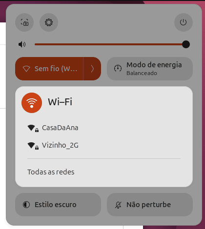
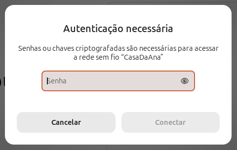
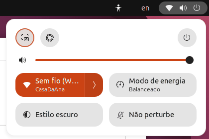
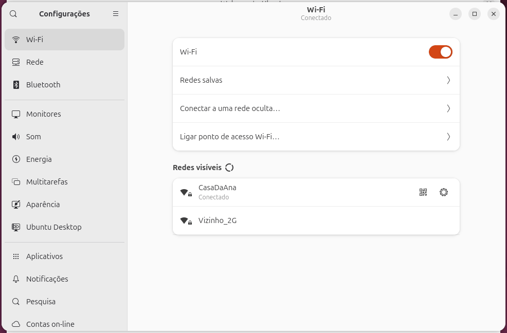
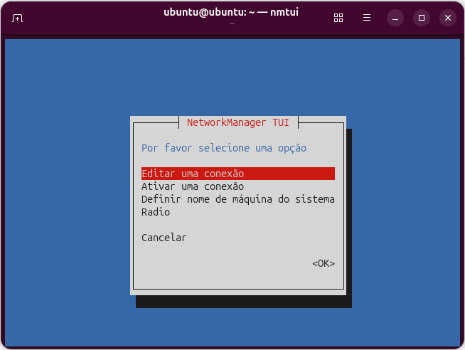
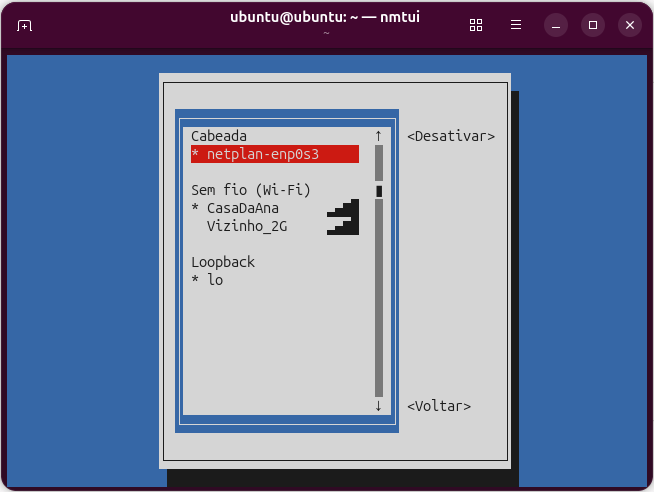
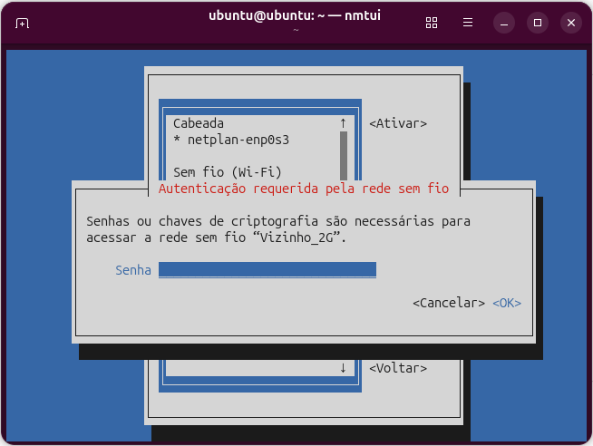

Ubuntu Wi-Fi
Nem todo computador fica perto do roteador com um cabo. Nesta aula você conecta o Ubuntu a uma rede Wi-Fi de três jeitos: pelo menu do GNOME (com o mouse), pelo nmcli (comandos) e pelo nmtui (menus dentro do terminal). No fim, vê como o Ubuntu Server se conecta ao Wi-Fi com o Netplan.
- O que são SSID, senha da rede e "conexão salva".
- Conectar pelo menu do GNOME e pelas Configurações.
- Listar redes e conectar com
nmcli, inclusive em rede oculta. - O que acontece com a senha errada, e como esquecer uma rede.
- Usar o
nmtuie configurar Wi-Fi no servidor com Netplan.
Tudo foi feito num Ubuntu 26.04 de verdade (o "modo de teste" do pendrive, numa máquina virtual), com placas Wi-Fi virtuais que se comportam como as de um notebook. Por isso, o prompt das sessões é ubuntu@ubuntu (o usuário do modo de teste) e a placa se chama wlan0. No seu notebook, ela costuma se chamar wlp2s0 ou parecido. Os detalhes estão em Como o laboratório foi feito.
Se ainda não leu Configurar a Rede, vale começar por lá: ela explica quem gerencia a rede no desktop (o NetworkManager) e no servidor (o Netplan). Se o Wi-Fi nem aparece no seu computador, a aula certa é Wi-Fi que Não Funciona.
Antes de conectar: quatro ideias
| Termo | O que é | No exemplo |
|---|---|---|
| SSID | O nome da rede, o que aparece na lista. Vem de Service Set Identifier. | CasaDaAna |
| BSSID | O endereço físico (MAC) do roteador que transmite a rede. Uma casa com dois roteadores tem um SSID e dois BSSIDs. | 02:00:00:00:01:00 |
| Senha (chave) | A senha do Wi-Fi. Redes WPA2 e WPA3 usam uma senha de 8 a 63 caracteres, também chamada de PSK (pre-shared key, "chave combinada antes"). | senhadaana123 |
| Conexão salva (perfil) | O que o NetworkManager guarda depois que você conecta: nome, senha e configurações. É por causa dela que o notebook reconecta sozinho quando você volta para casa. | Conexão CasaDaAna |
Quem faz tudo isso no Ubuntu Desktop é o NetworkManager. O menu do GNOME, as Configurações, o nmcli e o nmtui são só jeitos diferentes de dar ordens a ele. Por isso, uma rede conectada pelo menu aparece no nmcli, e vice-versa.
Pelo menu do GNOME
É o jeito do dia a dia. O menu do sistema fica no canto superior direito da tela (os ícones de rede, som e energia). Também abre com Super+S.
-
Abra o menu do sistema e clique na seta ao lado de Sem fio (Wi-Fi). A lista de redes próximas aparece:

Captura real. O cadeado indica rede com senha. "Todas as redes" abre as Configurações. -
Clique no nome da rede. Se ela tem senha, o GNOME pergunta:

Captura real. O ícone de olho no campo mostra a senha enquanto você digita. -
Digite a senha e clique em Conectar. Em alguns segundos, o bloco passa a mostrar o nome da rede, e o ícone de Wi-Fi aparece na barra superior:

Captura real: conectado à CasaDaAna.
E se a senha estiver errada?
O GNOME não mostra uma mensagem de erro: ele simplesmente abre a mesma janela de novo, já com a senha que você digitou. Se a janela "Autenticação necessária" volta logo depois de você clicar em Conectar, a senha está errada. Apague o campo, digite com calma (atenção às maiúsculas) e tente outra vez.
O motivo fica registrado no log do NetworkManager (veja journalctl). Saída real, filtrada com grep:
$ journalctl -u NetworkManager -b | grep "psk mismatch" | head -1 out 16 19:51:35 ubuntu NetworkManager[2048]: <info> [1792180295.8517] device (wlan0): Activation: (wifi) psk mismatch reported by supplicant, asking for new key
psk mismatch … asking for new key = "a senha não confere… pedindo uma nova chave".
Pelas Configurações: redes salvas e rede oculta
Em Configurações → Wi-Fi (ou "Todas as redes", no menu) você tem mais opções:

| Item | Para que serve |
|---|---|
| Chave Wi-Fi | Liga e desliga o rádio Wi-Fi. |
| Redes salvas | Lista as redes que o computador lembra. É ali que você esquece uma rede. |
| Conectar a uma rede oculta… | Para redes que não aparecem na lista (você digita o nome e a senha). |
| Ligar ponto de acesso Wi-Fi… | Transforma o computador num roteador para outros aparelhos. |
| Ícone de código QR | Mostra a senha da rede atual num QR code, para o celular ler. |
| Engrenagem | Detalhes da conexão: IP, DNS, "conectar automaticamente", IP fixo (veja Configurar a Rede). |
Pelo terminal: nmcli
nmcli é o NetworkManager command line interface. Ele é útil quando você está num terminal, por SSH, ou quer repetir a mesma configuração em várias máquinas.
1. O Wi-Fi está ligado?
$ nmcli radio WIFI-HW WIFI WWAN-HW WWAN habilitado habilitado missing habilitado
| Coluna | Significado |
|---|---|
WIFI-HW | O rádio Wi-Fi existe e não está travado por hardware (chave física, tecla Fn). |
WIFI | O Wi-Fi está ligado no sistema. desabilitado = desligado pelo menu ou pelo nmcli radio wifi off. |
WWAN-HW, WWAN | Modem de celular (4G). missing = não há modem (veja Celular e Modem 4G). |
2. Qual é a placa Wi-Fi?
O nmcli device status lista as placas (a tabela completa está no passo 5). Para achar só a do Wi-Fi, filtre com grep (saída real, antes de conectar):
$ nmcli device status | grep wlan0 wlan0 wifi desconectado -- « a placa Wi-Fi, ainda sem rede p2p-dev-wlan0 wifi-p2p desconectado -- « Wi-Fi Direct da mesma placa: ignore
No seu computador, troque wlan0 por wifi no grep, porque o nome da placa muda de máquina para máquina. O nome que aparece na primeira coluna é o que você usa nos comandos. Se não aparecer nenhuma linha, vá para Wi-Fi que Não Funciona.
3. Listar as redes
- nmcli
- O programa.
- device
- Vamos falar das placas.
- wifi
- …da parte Wi-Fi delas.
- list
- Liste as redes que a placa enxerga.
$ nmcli device wifi list
IN-USE BSSID SSID MODE CHAN RATE SIGNAL BARS SECURITY
02:00:00:00:01:01 Vizinho_2G Infra 6 54 Mbit/s 100 ▂▄▆█ WPA2
02:00:00:00:01:02 -- Infra 6 0 Mbit/s 100 ▂▄▆█ WPA2 « rede oculta: sem nome
02:00:00:00:01:00 CasaDaAna Infra 6 0 Mbit/s 100 ▂▄▆█ WPA2
| Coluna | Significado |
|---|---|
IN-USE | Um * marca a rede em que você está conectado agora. |
BSSID | O endereço do roteador. Os 02:00:00:… do laboratório são de placas virtuais. |
SSID | O nome da rede. -- significa rede oculta: o roteador transmite, mas não diz o nome. |
CHAN | Canal. De 1 a 13 é a faixa de 2,4 GHz; de 36 em diante, 5 GHz. |
RATE | Velocidade máxima anunciada. (O 0 Mbit/s é coisa das placas virtuais.) |
SIGNAL e BARS | Força do sinal, de 0 a 100, e em barrinhas. No laboratório tudo fica perto de 100, porque o "ar" é simulado. |
SECURITY | Tipo de proteção. Vazio = rede aberta, sem senha. |
A lista vem da última procura que a placa fez. Se você acabou de ligar o roteador e a rede não aparece, peça uma procura nova com nmcli device wifi rescan (não imprime nada) e liste de novo, ou use nmcli device wifi list --rescan yes.
4. Conectar
- nmcli device wifi connect
- "Conecte a placa Wi-Fi a uma rede".
- CasaDaAna
- O SSID, igualzinho à lista (maiúsculas contam). Se tiver espaço, use aspas:
"Casa da Ana". - --ask
- Pergunte a senha na hora. Assim ela não fica gravada no histórico do terminal.
$ nmcli device wifi connect CasaDaAna --ask Senhas ou chaves de criptografia são necessárias para acessar a rede sem fio “CasaDaAna”. Senha (802-11-wireless-security.psk): ••••••••••••• « você digita; aparecem bolinhas Dispositivo “wlan0” ativado com sucesso com “a7bcb616-f360-4700-b591-3fca36dc8142”. $ echo $? 0
A última linha diz que a placa wlan0 foi ativada com uma conexão nova, identificada por um código (o UUID). A partir daqui a rede fica salva: das próximas vezes o Ubuntu conecta sozinho, sem perguntar a senha.
Existe a forma curta, com a senha no próprio comando:
$ nmcli device wifi connect CasaDaAna password senhadaana123
Ela funciona e é útil em scripts, mas a senha fica no histórico (history) e aparece para quem estiver olhando a tela. No dia a dia, prefira --ask.
5. Conferir
$ nmcli device status DEVICE TYPE STATE CONNECTION enp0s3 ethernet conectado netplan-enp0s3 « a placa de cabo da máquina virtual wlan0 wifi conectado CasaDaAna « conectado, usando a conexão CasaDaAna lo loopback connected (externally) lo p2p-dev-wlan0 wifi-p2p desconectado -- veth-lab ethernet não gerenciável -- « peça do laboratório hwsim0 unknown não gerenciável -- « peça do laboratório $ ip -br a show wlan0 wlan0 UP 192.168.50.144/24 fe80::2ec1:de1a:39ef:5afd/64 « o roteador entregou um IP
Procure a linha com TYPE igual a wifi: conectado e o nome da rede em CONNECTION. No seu computador aparecem só as suas placas: veth-lab e hwsim0 existem apenas no laboratório. Com IP na placa, teste a internet com ping -c 3 ubuntu.com (veja ip, ping, ss).
O que o nmcli devolve
Em scripts, o código de saída (echo $?) diz o que houve. Estes foram os códigos reais do laboratório:
| Código | Quando aparece |
|---|---|
0 | Deu certo. |
3 | Tempo esgotado: por exemplo, a senha estava errada e ninguém digitou outra. |
4 | A ativação falhou (rede fora de alcance, por exemplo). |
7 | Sem permissão (o caso do SSH, mais abaixo). |
10 | Não encontrou o que você pediu: rede, conexão ou placa com esse nome. |
Senha errada no nmcli
Com --ask, o nmcli faz como o GNOME: pergunta de novo. Saída real, com uma senha errada:
$ nmcli device wifi connect CasaDaAna --ask Senhas ou chaves de criptografia são necessárias para acessar a rede sem fio “CasaDaAna”. Senha (802-11-wireless-security.psk): •••••••••••• Senhas ou chaves de criptografia são necessárias para acessar a rede sem fio “CasaDaAna”. Senha (802-11-wireless-security.psk): « pediu de novo: a primeira estava errada
Digite a senha certa, ou aperte Ctrl+C para desistir. Se ninguém responder, depois de 90 segundos aparece Erro: Tempo limite de 90 seg expirou. e o código 3.
Com a senha escrita no comando (password), não há como perguntar de novo. Saída real:
$ nmcli device wifi connect CasaDaAna password senhaerrada1 Senhas ou chaves de criptografia são necessárias para acessar a rede sem fio “CasaDaAna”. Aviso: senha para “802-11-wireless-security.psk” não fornecida em “passwd-file” e nmcli não pode solicitar sem a opção “--ask”. Erro: Tempo limite de 90 seg expirou. $ echo $? 3
Traduzindo: "a senha não serviu, e sem --ask eu não posso pedir outra". No desktop, enquanto o nmcli espera, a janela "Autenticação necessária" do GNOME também aparece na tela, porque o NetworkManager pede a senha a todos os programas que sabem perguntá-la.
Mesmo quando a senha está errada, o NetworkManager cria a conexão salva. Depois, ao tentar de novo, ele usa a senha errada guardada. Se isso acontecer, esqueça a rede e conecte outra vez.
Rede oculta
Uma rede oculta não anuncia o nome. Ela aparece como -- no nmcli e nem aparece no menu do GNOME. Para entrar, você precisa saber o nome exato. Sem avisar que ela é oculta, o nmcli procura o nome na lista e não acha (saída real):
$ nmcli device wifi connect Escritorio password senhadoescritorio Erro: nenhuma rede com SSID “Escritorio” foi encontrada. $ echo $? 10
- nmcli device wifi connect
- Conectar.
- Escritorio
- O nome exato da rede oculta.
- password senhadoescritorio
- A senha (ou troque por
--ask). - hidden yes
- "Esta rede é oculta": procure-a chamando pelo nome.
$ nmcli device wifi connect Escritorio password senhadoescritorio hidden yes Dispositivo “wlan0” ativado com sucesso com “e4676b9e-576f-4719-8a50-5dc79415c068”. $ nmcli -f 802-11-wireless.ssid,802-11-wireless.hidden connection show Escritorio 802-11-wireless.ssid: Escritorio 802-11-wireless.hidden: sim « a conexão salva lembra que a rede é oculta
Pelo mouse, o caminho é Configurações → Wi-Fi → Conectar a uma rede oculta….
Quem usa programas de análise de Wi-Fi descobre o nome de uma rede oculta em minutos. O que protege a rede é uma senha forte com WPA2 ou WPA3.
Conexões salvas
Toda rede em que você entra vira uma conexão salva. Para listar:
$ nmcli connection show NAME UUID TYPE DEVICE netplan-enp0s3 1eef7e45-3b9d-3043-bee3-fc5925c90273 ethernet enp0s3 Escritorio e4676b9e-576f-4719-8a50-5dc79415c068 wifi wlan0 « em uso agora lo d984114d-7891-4bae-8c47-bc84a8ca51a1 loopback lo CasaDaAna a7bcb616-f360-4700-b591-3fca36dc8142 wifi -- « salva, mas não está em uso
DEVICE com -- quer dizer "salva, mas não está ativa agora". Para ver só as ativas: nmcli connection show --active.
Trocar de rede: down e up
$ nmcli connection down Escritorio Conexão “Escritorio” desativada com sucesso (caminho D-Bus ativo: /org/freedesktop/NetworkManager/ActiveConnection/16) $ nmcli connection up CasaDaAna Conexão ativada com sucesso (caminho D-Bus ativo: /org/freedesktop/NetworkManager/ActiveConnection/17)
O "caminho D-Bus" é um endereço interno do NetworkManager; pode ignorar. O que importa é o "com sucesso".
Quando foi usada e se conecta sozinha
Com -f (fields, "campos") você escolhe as colunas:
$ nmcli -f NAME,AUTOCONNECT,AUTOCONNECT-PRIORITY,TIMESTAMP-REAL connection show NAME AUTOCONNECT AUTOCONNECT-PRIORITY TIMESTAMP-REAL netplan-enp0s3 sim 0 sex 16 out 2026 19:53:49 CasaDaAna sim 0 sex 16 out 2026 19:58:51 lo sim 0 sex 16 out 2026 19:36:03
AUTOCONNECT sim: conecta sozinha quando a rede estiver ao alcance. Se duas redes salvas estão ao alcance, ganha a de maior AUTOCONNECT-PRIORITY. Para preferir a de casa:
$ nmcli connection modify CasaDaAna connection.autoconnect-priority 10
O modify não imprime nada quando dá certo. Para uma rede salva nunca conectar sozinha, use connection.autoconnect no no lugar da prioridade.
Esquecer uma rede
"Esquecer" é apagar a conexão salva, com senha e tudo:
$ nmcli connection delete Escritorio A conexão “Escritorio” (e4676b9e-576f-4719-8a50-5dc79415c068) foi excluída com sucesso.
Pelo mouse: Configurações → Wi-Fi → Redes salvas, e o botão de remover ao lado da rede. Esquecer é o remédio para "a senha do roteador mudou e o notebook não conecta mais".
Ver a senha de uma rede salva
Esqueceu a senha do Wi-Fi de casa? O computador lembra. A opção -s (show secrets) mostra os segredos, e -g (get) imprime só o valor pedido:
$ nmcli -s -g 802-11-wireless-security.psk connection show CasaDaAna senhadaana123
Também dá para usar o ícone de QR code nas Configurações, ou nmcli device wifi show-password, que mostra a senha da rede atual e um QR code no terminal.
Onde a conexão fica guardada
No Ubuntu, o NetworkManager guarda as conexões em arquivos do Netplan, em /etc/netplan/, com nomes que começam com 90-NM- seguido do UUID. Só o root pode ler, porque a senha está ali, em texto. Conteúdo real:
network:
version: 2
wifis:
NM-17ac2344-989c-4f2f-8e10-2994578e5cb5:
renderer: NetworkManager
match:
name: "wlan0"
dhcp4: true
dhcp6: true
access-points:
"CasaDaAna":
auth:
key-management: "psk"
password: "senhadaana123"
networkmanager:
uuid: "17ac2344-989c-4f2f-8e10-2994578e5cb5"
name: "CasaDaAna"
passthrough:
wifi-security.auth-alg: "open"
ipv6.addr-gen-mode: "default"
ipv6.ip6-privacy: "-1"
proxy._: ""
networkmanager:
uuid: "17ac2344-989c-4f2f-8e10-2994578e5cb5"
name: "CasaDaAna"
Não edite esses arquivos à mão: use o nmcli ou as Configurações. Mas repare na estrutura wifis: → access-points: → nome da rede → senha. É a mesma que você vai escrever no Ubuntu Server.
Desligar e ligar o Wi-Fi
$ nmcli radio wifi off $ nmcli device status DEVICE TYPE STATE CONNECTION enp0s3 ethernet conectado netplan-enp0s3 lo loopback connected (externally) lo wlan0 wifi não disponível -- « rádio desligado p2p-dev-wlan0 wifi-p2p não disponível -- veth-lab ethernet não gerenciável -- hwsim0 unknown não gerenciável -- $ nmcli radio wifi on
É o mesmo que a chave Wi-Fi das Configurações. Repare no estado não disponível: a placa existe, mas o rádio está desligado.
nmtui: menus no terminal
nmtui (NetworkManager text user interface) mostra menus dentro do terminal. É ótimo quando você não lembra os comandos, e funciona até sem interface gráfica (num TTY, aberto com Ctrl+Alt+F3). Basta digitar:
$ nmtui

nmtui.| Tecla | Faz |
|---|---|
| ↑ ↓ | Sobe e desce na lista. |
| Tab | Pula para o próximo campo ou botão. |
| Enter | Escolhe o item ou aperta o botão. |
| Esc | Volta (ou sai). |
Em Ativar uma conexão aparecem as redes. O * marca as que estão em uso, e as barrinhas mostram o sinal:

Escolha uma rede com senha e aperte Enter: o nmtui pergunta a senha numa janelinha.

nmtui.Detalhe real do laboratório: mesmo quando você aperta <Cancelar> nessa janela, a conexão Vizinho_2G fica salva (sem senha). Se isso incomodar, apague-a com nmcli connection delete Vizinho_2G. Em Editar uma conexão você muda IP, DNS e "conectar automaticamente" com os mesmos menus.
Wi-Fi no Ubuntu Server: Netplan
O Ubuntu Server não tem o NetworkManager. A rede é descrita em arquivos YAML em /etc/netplan/ (veja Configurar a Rede), e quem conversa com o Wi-Fi é o wpa_supplicant, chamado pelo Netplan. Servidor com Wi-Fi é comum em casa: um computador antigo ou um Raspberry Pi longe do roteador.
O arquivo
Crie um arquivo novo, por exemplo /etc/netplan/60-wifi.yaml:
network:
version: 2
wifis:
wlan0:
renderer: networkd
dhcp4: true
access-points:
"CasaDaAna":
password: "senhadaana123"
| Chave | Significado |
|---|---|
wifis: | Placas Wi-Fi (para cabo, a chave é ethernets:). |
wlan0: | O nome da placa, como aparece em ip -br link. No seu servidor pode ser wlp2s0. |
renderer: networkd | Quem aplica a configuração. No Ubuntu Server o networkd já é o padrão e esta linha é dispensável. No laboratório, que era um desktop, ela foi necessária para imitar o servidor. |
dhcp4: true | Pegue o IP do roteador automaticamente. |
access-points: | As redes que a placa pode usar ("pontos de acesso"). |
"CasaDaAna": | O SSID, entre aspas. |
password: | A senha. Para uma rede oculta, acrescente hidden: true no mesmo nível da senha. |
Permissões: só o root lê
O arquivo tem a senha do Wi-Fi. Se outros usuários puderem lê-lo, o Netplan reclama (saída real, em inglês):
$ sudo netplan generate ** (configure:17884): WARNING **: 20:06:24.102: Permissions for /etc/netplan/60-wifi.yaml are too open. Netplan configuration should NOT be accessible by others. $ sudo chmod 600 /etc/netplan/60-wifi.yaml $ sudo netplan generate « agora não reclama de nada
"As permissões estão abertas demais. A configuração do Netplan NÃO deve ser acessível por outros." O chmod 600 deixa só o dono (root) ler e escrever (veja chmod).
Aplicar e conferir
$ sudo netplan apply $ networkctl IDX LINK TYPE OPERATIONAL SETUP 1 lo loopback carrier unmanaged 2 enp0s3 ether routable unmanaged 3 wlan0 wlan routable configured « routable: tem IP e rota; configured: o networkd cuida dela 5 hwsim0 ieee80211_radiotap off unmanaged 7 veth-lab ether routable unmanaged 5 links listed. $ ip -br a show wlan0 wlan0 UP 192.168.50.145/24 metric 600 fe80::ff:fe00:0/64
Num servidor remoto, prefira sudo netplan try (volta sozinho se você perder o acesso), como em Configurar a Rede. O netplan status resume tudo de uma placa (saída real):
$ netplan status wlan0
Online state: online
DNS Addresses: 127.0.0.53 (stub)
DNS Search: lan
● 3: wlan0 wifi/"(null)" UP (networkd: wlan0)
MAC Address: 02:00:00:00:00:00
Addresses: 192.168.50.145/24 (dynamic, dhcp)
fe80::ff:fe00:0/64 (link)
DNS Addresses: 192.168.50.1
Routes: default via 192.168.50.1 from 192.168.50.145 metric 600
(dhcp)
192.168.50.0/24 from 192.168.50.145 metric 600 (link)
192.168.50.1 from 192.168.50.145 metric 600 (dhcp, link)
fe80::/64 metric 256
4 inactive interfaces hidden. Use "--all" to show all.
Por trás, o Netplan criou um serviço só para o Wi-Fi dessa placa, o netplan-wpa-wlan0. É no log dele que aparecem os problemas de senha:
$ systemctl status netplan-wpa-wlan0.service --no-pager
● netplan-wpa-wlan0.service - WPA supplicant for netplan wlan0
Loaded: loaded (/run/systemd/generator.late/netplan-wpa-wlan0.service; generated)
Active: active (running) since Fri 2026-10-16 20:06:26 UTC; 10s ago
Invocation: a9e481f7050947d09a7732a916926029
Main PID: 18304 (wpa_supplicant)
Tasks: 1 (limit: 3350)
Memory: 2.2M (peak: 2.5M)
CPU: 83ms
CGroup: /system.slice/netplan-wpa-wlan0.service
└─18304 /sbin/wpa_supplicant -c /run/netplan/wpa-wlan0.conf -iwlan0 -Dnl80211,wext
out 16 20:06:26 ubuntu systemd[1]: Started netplan-wpa-wlan0.service - WPA supplicant for netplan wlan0.
out 16 20:06:26 ubuntu wpa_supplicant[18304]: Successfully initialized wpa_supplicant
out 16 20:06:30 ubuntu wpa_supplicant[18304]: wlan0: SME: Trying to authenticate with 02:00:00:00:01:00 (SSID='CasaDaAna' freq=2437 MHz)
out 16 20:06:30 ubuntu wpa_supplicant[18304]: wlan0: Trying to associate with 02:00:00:00:01:00 (SSID='CasaDaAna' freq=2437 MHz)
out 16 20:06:30 ubuntu wpa_supplicant[18304]: wlan0: Associated with 02:00:00:00:01:00
out 16 20:06:30 ubuntu wpa_supplicant[18304]: wlan0: CTRL-EVENT-SUBNET-STATUS-UPDATE status=0
out 16 20:06:30 ubuntu wpa_supplicant[18304]: wlan0: WPA: Key negotiation completed with 02:00:00:00:01:00 [PTK=CCMP GTK=CCMP]
out 16 20:06:30 ubuntu wpa_supplicant[18304]: wlan0: CTRL-EVENT-CONNECTED - Connection to 02:00:00:00:01:00 completed [id=0 id_str=] « conectou
Lendo de cima para baixo: tentou autenticar, associou ao roteador, negociou as chaves (Key negotiation completed) e conectou (CTRL-EVENT-CONNECTED). O servidor precisa do pacote wpasupplicant; se o serviço reclamar que o programa não existe, instale-o (por cabo ou pelo celular, veja Celular e Modem 4G).
Senha errada no servidor
Não há janela perguntando nada: a placa fica sem IP. Saída real, com a senha trocada no arquivo:
$ networkctl IDX LINK TYPE OPERATIONAL SETUP 1 lo loopback carrier unmanaged 2 enp0s3 ether routable unmanaged 3 wlan0 wlan no-carrier configuring « sem conexão, tentando 5 hwsim0 ieee80211_radiotap off unmanaged 7 veth-lab ether routable unmanaged 5 links listed. $ journalctl -u netplan-wpa-wlan0 -n 8 out 16 20:07:03 ubuntu wpa_supplicant[19335]: wlan0: SME: Trying to authenticate with 02:00:00:00:01:00 (SSID='CasaDaAna' freq=2437 MHz) out 16 20:07:03 ubuntu wpa_supplicant[19335]: wlan0: Trying to associate with 02:00:00:00:01:00 (SSID='CasaDaAna' freq=2437 MHz) out 16 20:07:03 ubuntu wpa_supplicant[19335]: wlan0: Associated with 02:00:00:00:01:00 out 16 20:07:03 ubuntu wpa_supplicant[19335]: wlan0: CTRL-EVENT-SUBNET-STATUS-UPDATE status=0 out 16 20:07:07 ubuntu wpa_supplicant[19335]: wlan0: CTRL-EVENT-DISCONNECTED bssid=02:00:00:00:01:00 reason=15 out 16 20:07:07 ubuntu wpa_supplicant[19335]: wlan0: WPA: 4-Way Handshake failed - pre-shared key may be incorrect « a senha out 16 20:07:07 ubuntu wpa_supplicant[19335]: wlan0: CTRL-EVENT-SSID-TEMP-DISABLED id=0 ssid="CasaDaAna" auth_failures=1 duration=10 reason=WRONG_KEY out 16 20:07:07 ubuntu wpa_supplicant[19335]: wlan0: Added BSSID 02:00:00:00:01:00 into ignore list, ignoring for 10 seconds
A linha-chave é 4-Way Handshake failed - pre-shared key may be incorrect: "a troca de chaves falhou, a senha pode estar errada". Logo depois, reason=WRONG_KEY ("chave errada"). Corrija a senha no YAML e rode sudo netplan apply de novo.
Erros de indentação
Em YAML, os espaços do começo da linha dizem o que está dentro do quê. O netplan generate confere o arquivo sem aplicar nada e aponta arquivo:linha:coluna. Duas saídas reais:
$ sudo netplan generate
/etc/netplan/60-wifi.yaml:7:6: Invalid YAML: inconsistent indentation:
access-points:
^
$ echo $?
1
"Indentação inconsistente" na linha 7: o access-points: estava com 5 espaços, e não 6 como o dhcp4: acima dele.
$ sudo netplan generate
/etc/netplan/60-wifi.yaml:8:21: Error in network definition: expected mapping (check indentation)
"CasaDaAna":
^
Aqui a linha password: estava no mesmo nível de "CasaDaAna":, e não dentro dele. O Netplan esperava uma lista de opções embaixo do nome da rede ("expected mapping") e sugere: "confira a indentação".
Formas diferentes de conectar ao Wi-Fi
| Forma | Onde | Qual usar? |
|---|---|---|
| Menu do GNOME | Canto superior direito | O dia a dia no desktop. |
| Configurações → Wi-Fi | Janela de Configurações | Rede oculta, redes salvas, QR code, IP fixo. |
nmcli | Terminal (também por SSH) | Scripts, acesso remoto, repetir a mesma configuração. |
nmtui | Terminal ou TTY | Sem interface gráfica e sem decorar comandos. |
Netplan (wifis:) | /etc/netplan/*.yaml | Ubuntu Server. |
Quando não funciona
$ nmcli connection delete CasaDaAna Erro: Exclusão da conexão falhou: Insufficient privileges Erro: nem todas as conexões ativas foram excluídas. $ nmcli device wifi rescan Erro: org.freedesktop.NetworkManager.wifi.scan request failed: not authorized.
O que aconteceu: estas saídas reais vieram de um acesso por SSH ao desktop. Quem está sentado na frente do computador pode mexer no Wi-Fi sem senha; quem entra pela rede, não. Quem decide isso é o polkit, o "porteiro" das permissões do sistema. "Insufficient privileges" = "permissões insuficientes"; "not authorized" = "não autorizado". O código de saída é 7.
Como resolver: pelo SSH, use sudo: sudo nmcli connection delete CasaDaAna. No terminal da própria máquina, o comando funciona sem sudo.
O que aconteceu: a senha está errada, ou a conexão salva tem uma senha antiga (o roteador mudou de senha).
Como confirmar: no log do kernel aparece a desconexão "por tempo esgotado na troca de chaves" (saída real, filtrada):
$ sudo dmesg | grep wlan0 | head -7 [ 979.141506] wlan0: authenticate with 02:00:00:00:01:00 (local address=02:00:00:00:00:00) [ 979.141521] wlan0: send auth to 02:00:00:00:01:00 (try 1/3) [ 979.142659] wlan0: authenticated [ 979.147198] wlan0: associate with 02:00:00:00:01:00 (try 1/3) [ 979.147850] wlan0: RX AssocResp from 02:00:00:00:01:00 (capab=0x411 status=0 aid=1) [ 979.147933] wlan0: associated [ 983.158661] wlan0: deauthenticated from 02:00:00:00:01:00 (Reason: 15=4WAY_HANDSHAKE_TIMEOUT) « senha recusada
Como resolver: esqueça a rede (nmcli connection delete NOME) e conecte de novo com --ask, digitando com calma.
$ nmcli device wifi connect CasaDaana password senhadaana123 Erro: nenhuma rede com SSID “CasaDaana” foi encontrada.
O que aconteceu: o nome não bate com nenhuma rede da lista. Aqui, CasaDaana com "a" minúsculo; a rede é CasaDaAna. Também acontece com rede oculta sem hidden yes, ou com a rede fora de alcance.
Como resolver: copie o nome de nmcli device wifi list, use aspas se tiver espaço e, se a rede for oculta, acrescente hidden yes. Se ela não está na lista, chegue mais perto do roteador e rode nmcli device wifi list --rescan yes.
$ nmcli connection up Escritorio Erro: Ativação da conexão falhou: Não foi possível encontrar a rede Wi-Fi Dica: use “journalctl -xe NM_CONNECTION=83d64d38-0fcb-4add-9e19-497e22310a7e + NM_DEVICE=wlan0” para obter mais detalhes.
O que aconteceu: a conexão salva existe, mas a rede não respondeu a tempo: roteador desligado, longe demais ou reiniciando. No laboratório, isso aconteceu enquanto o "roteador" estava desligado.
Como resolver: confira se outros aparelhos enxergam a rede, espere o roteador terminar de ligar e rode o nmcli connection up de novo. O comando da dica mostra o log só dessa conexão.
wifi
O que aconteceu: o Wi-Fi está desligado (por software ou por uma tecla/chave), ou a placa não foi reconhecida (falta driver ou firmware).
Como resolver: rode nmcli radio. Se WIFI estiver desabilitado, ligue com nmcli radio wifi on. Se a placa não aparece em nmcli device status, siga a aula Wi-Fi que Não Funciona. Enquanto isso, use a internet do celular pelo cabo USB (Celular e Modem 4G).
Referência
| Comando | Faz |
|---|---|
nmcli radio | Mostra se o Wi-Fi está ligado |
nmcli radio wifi on|off | Liga ou desliga o Wi-Fi |
nmcli device status | Placas e conexão ativa em cada uma |
nmcli device wifi list | Redes ao alcance (--rescan yes procura de novo) |
nmcli device wifi rescan | Pede uma procura nova |
nmcli device wifi connect SSID --ask | Conecta perguntando a senha |
nmcli device wifi connect SSID password SENHA hidden yes | Conecta a uma rede oculta |
nmcli device wifi show-password | Mostra a senha e o QR code da rede atual |
nmcli connection show | Conexões salvas (--active: só as ativas) |
nmcli connection up|down NOME | Ativa ou desativa uma conexão salva |
nmcli connection modify NOME connection.autoconnect-priority 10 | Dá preferência a uma rede |
nmcli connection delete NOME | Esquece a rede |
nmcli -s -g 802-11-wireless-security.psk connection show NOME | Mostra a senha salva |
nmtui | Menus no terminal |
sudo netplan generate / try / apply | Valida, testa e aplica o YAML do servidor |
networkctl | Estado das placas no servidor (networkd) |
journalctl -u netplan-wpa-PLACA | Log do Wi-Fi no servidor |
Exercícios
1. Sem senha no histórico
Complete para conectar à rede e digitar a senha só quando o nmcli perguntar:
2. Rede oculta
Complete para conectar à rede oculta "Escritorio":
3. Esquecer a rede
A senha do roteador mudou. Complete para apagar a conexão salva "CasaDaAna":
4. Na saída de nmcli device wifi list, uma linha tem -- na coluna SSID. O que é?
5. Conectado por SSH ao desktop, nmcli connection delete CasaDaAna respondeu "Insufficient privileges". O que fazer?
6. No Netplan do servidor, dentro de qual chave ficam o nome da rede e a senha?
Como o laboratório foi feito
Transparência: a máquina virtual do guia não tem uma placa Wi-Fi de verdade. Para mostrar telas e mensagens reais (e não inventadas), o laboratório foi montado assim:
- O Ubuntu 26.04 Desktop rodou no modo de teste do pendrive ("Experimentar Ubuntu"), dentro do VirtualBox, com o idioma trocado para português do Brasil.
- O módulo de testes do kernel
mac80211_hwsimcriou duas placas Wi-Fi virtuais que conversam por um "ar" simulado:wlan0, a placa "do notebook", ewlan1, o "roteador". Ohwsim0que aparece nas listas é o monitor desse ar simulado. - O "roteador" ficou num espaço de rede separado (um network namespace), para o NetworkManager não enxergá-lo. Ele anunciava três redes:
CasaDaAna,Vizinho_2Ge a ocultaEscritorio, e emprestava endereços192.168.50.x. A ligação dele com a internet é a placaveth-lab, que também aparece nas listas. - Tudo nesta aula foi feito na
wlan0, com os programas do próprio Ubuntu, sem modificação. A internet chegava de verdade pelo Wi-Fi simulado. - Os comandos foram digitados por SSH. Para o SSH ter as mesmas permissões de quem está sentado na frente do computador, o laboratório ganhou uma regra do polkit; antes dela, apareceram as mensagens reais de "Insufficient privileges" mostradas acima.
Por isso, três coisas do laboratório são diferentes do seu computador: as placas se chamam wlan0 (e não wlp2s0), o sinal fica sempre perto de 100, e existem as linhas extras veth-lab e hwsim0.
Resumo
- O NetworkManager cuida do Wi-Fi no desktop; menu do GNOME, Configurações,
nmclienmtuimexem nas mesmas conexões salvas. nmcli device wifi listlista;nmcli device wifi connect SSID --askconecta;hidden yespara rede oculta.- Senha errada: a janela (ou a pergunta do
--ask) volta. Senha antiga salva:nmcli connection deletee conecte de novo. - Por SSH, mudanças no Wi-Fi do desktop precisam de
sudo. - No servidor:
wifis:→ placa →access-points:→"SSID":→password:, arquivo comchmod 600, enetplan generate/try/apply.